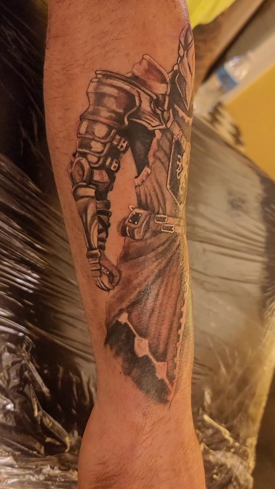

Turn an old, crooked or faded tattoo into something you are proud of.

A cover up is part art and part engineering. Brian has spent decades reworking crooked lines and burying old ink under new designs that actually hold up. You get a straight answer about what can and cannot be done, then a piece built to make you forget the old one was ever there.
Brian has done most of may tattoo including a cover up and fixing a crocked tattoo from previous artistes (prior to Brian). All his artists are kind and curious. Very clean and great pricing for the best quality of work in the Treasure Valley.
Amazing artists at affordable prices! They are professional and so friendly. Brian does all my work now and turns whatever I want into more than what I could have imagined. Fantastic experience every time :)
Can't rave enough! Brian was very thorough, kind, courteous, and made my first tattoo a great experience with fantastic artwork and detail.
Reach out for a free consultation and a no pressure plan from an award winning artist.